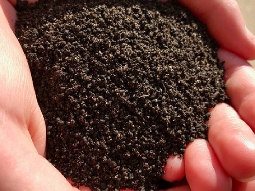

Nossos produtos e serviços
Bioadubo
LioAdubo é um composto orgânico que contém nutrientes que aumentam o crescimento, enraizamento e dão mais vigor para as plantas. Apresenta um feito imediato. Elaborado a partir de tratamento biológico de materiais orgânicos e vegetais, através de uma ação de macro e microrganismos específicos do solo.
Para que serve um trator agrícola?
Como citado acima, o trator agrícola é essencial para a agricultura. Ele é um veículo que desempenha diversas funções, como arar, cultivar e plantar os campos. Os modelos mais modernos podem ser usados para uma variedade ainda maior de tarefas, como cuidado de rotina com os gramados, manutenção da paisagem, distribuição de fertilizantes em arbustos, entre outros.
Falando em modelos, existem diversos tipos de tratores disponíveis hoje em dia, cada modelo sendo adequado para uma tarefa específica. Se você precisa trabalhar em um grande jardim ou uma extensa área de campo ou pastagem, um modelo subcompacto ou trator compacto vai atender aos trabalhos pesados de paisagismo e tarefas como escavação, transporte ou lavra. Já um trator utilitário é ideal para tarefas de paisagismo. Enfim, basta escolher o que melhor adequa-se a sua realidade.
O que é um implemento agrícola?
Os implementos agrícolas são equipamentos que acoplados a algum sistema de tração, como os tratores auxiliando no preparo do solo, adubação, implantação da cultura e colheita. Alguns dos implementos agrícolas mais utilizados: Arados: Os arados são implementos que operam nas camadas iniciais do solo, na qual as plantas irão se desenvolver. A principal função é propiciar ao solo melhores condições de aeração, infiltração, armazenamento de água e homogeneização da fertilidade. Subsolador: O subsolador vem sendo bastante utilizado especialmente na cultura da cana. Ele serve para romper camadas compactadas geralmente presentes nas camadas inferiores do solo. Devido ao intenso tráfego de máquinas pesadas nas lavouras, as camadas inferiores acabam ficando mais compactadas ou adensadas. Além disso, existem no mercado diferentes tipos de subsoladores, os quais atuam em uma camada superior a 30 cm de profundidade. Grades aradoras e niveladoras: As grades aradoras intermediárias ou pesadas realizam a aração e a gradagem. Entre os benefícios deste implemento é possível destacar a incorporação de adubos orgânicos ou químicos, enterrio de sementes distribuídas a lanço e destorroamento. Cada grade demanda força de tração e de acordo com o tamanho dos discos, formato e peso, existem diferentes profundidades de trabalho. As grades aradoras e niveladoras são os implementos de preparo de solo mais utilizados no Cerrado. Pulverizadores: Os pulverizadores é um dos tipos de implementos agrícolas mais importantes e que pode ser importante durante todo o ciclo da cultura. Eles são utilizados com o objetivo de auxiliar agricultores no combate às plantas daninhas, insetos, entre outros. Sua maior função é permitir o controle da dosagem na aplicação de defensivos ou fertilizantes sobre a área de interesse.